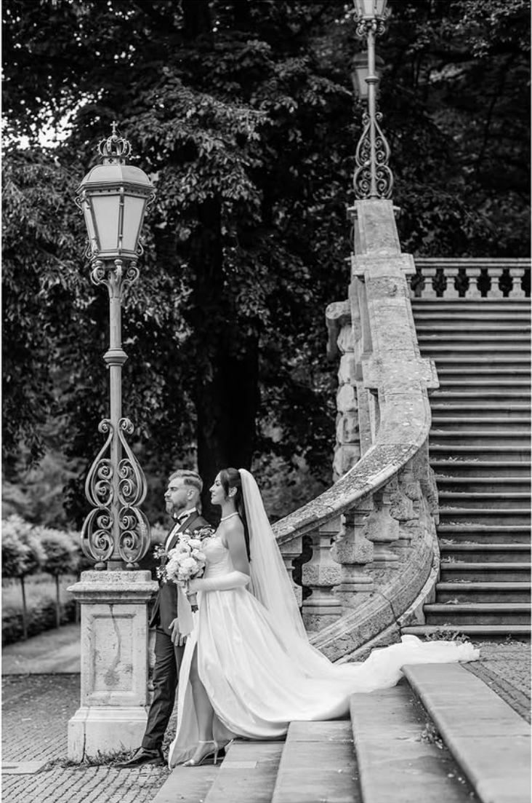
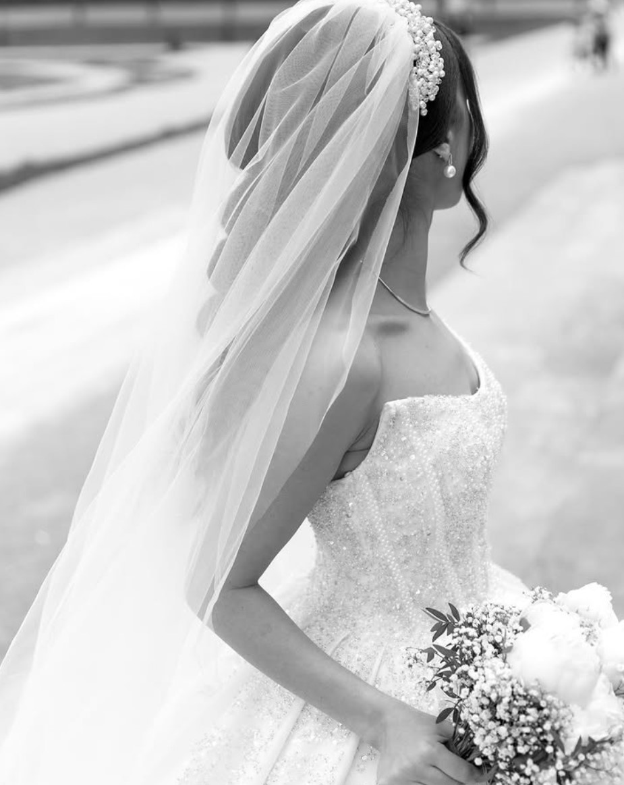
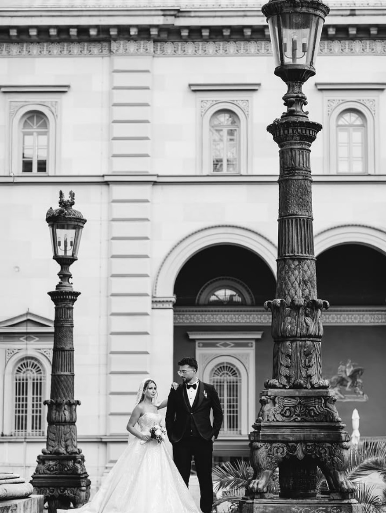
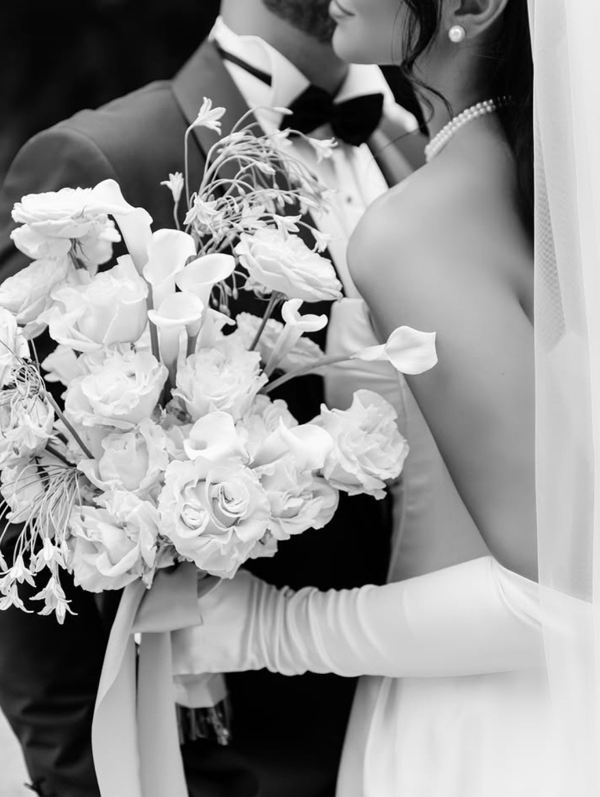
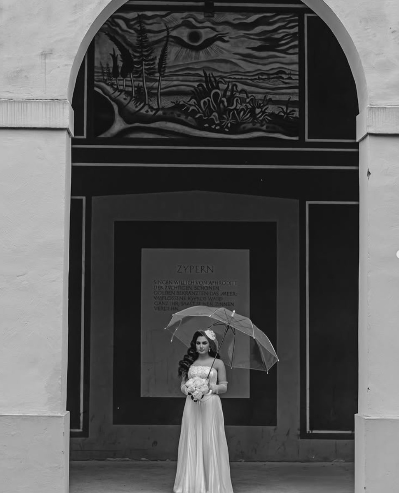
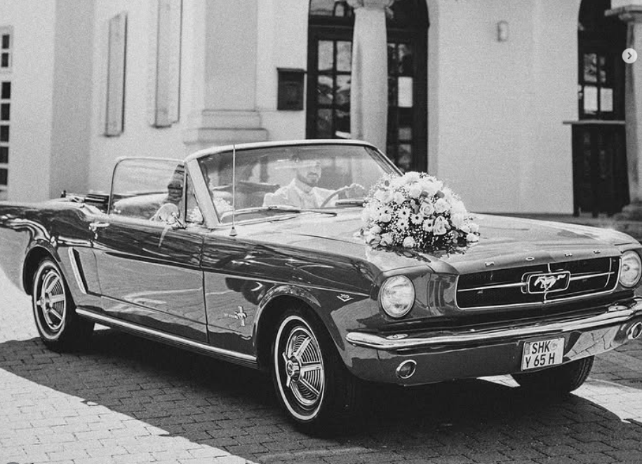

Wedding Photography
Ganztagesreportagen mit Fokus auf echten Momenten, eleganten Portraits und hochwertiger Bildsprache.

München & weltweit
Authentisch, emotional und mit editorialem Blick. Ich dokumentiere euren Tag mit einer ruhigen, kunstvollen Handschrift für Bilder, die sich auch in Jahren noch luxuriös anfühlen.
Shooting BuchenGalerie






Leistungen
Ganztagesreportagen mit Fokus auf echten Momenten, eleganten Portraits und hochwertiger Bildsprache.
Internationale Hochzeiten in Villen, Resorts und historischen Venues mit nahtloser Begleitung.
Mode-inspirierte Bridal Sessions für moderne Bräute, die Ästhetik und Ausstrahlung verbinden.
Natürliche Paarshootings mit cineastischer Bildwirkung als Auftakt für eure Hochzeitsgeschichte.
Luxuriöse Detailaufnahmen von Papeterie, Ringen, Stoffen und Florals mit Magazin-Charakter.
Über Yasemin
Ich bin Yasemin, Hochzeitsfotografin aus München. Meine Arbeit verbindet dokumentarisches Storytelling mit einer editorialen, modischen Bildästhetik. Ich liebe die leisen Augenblicke zwischen den großen Szenen: ein Blick, eine Berührung, ein Atemzug vor dem Ja-Wort.
Mein Anspruch ist ein Erlebnis, das sich hochwertig, persönlich und unaufdringlich anfühlt. Für Paare, die Eleganz leben und Bilder suchen, die auch in 20 Jahren noch relevant sind.
"Eure Geschichte verdient mehr als Trends. Sie verdient Charakter, Tiefe und zeitlose Eleganz."
Yasemin
Client Love
"Yasemin hat unsere Hochzeit so kunstvoll und gleichzeitig so echt eingefangen. Jedes Bild fühlt sich wie ein Editorial an, aber voller Emotion."
@sophiejulian
"Diese Ruhe, diese Eleganz, dieser Blick für Details. Unsere Galerie sieht aus wie ein Magazin und fühlt sich trotzdem zu 100% nach uns an."
@alinafranz
"Vom ersten Call bis zur finalen Galerie war alles premium. Unaufdringlich, herzlich und absolut professionell."
Booking 2026/2027
Für exklusive Hochzeiten nehme ich pro Monat nur eine limitierte Anzahl an Reportagen an, um jede Geschichte mit voller Präsenz begleiten zu können.
Kontakt
Ich freue mich auf eure Nachricht. Teilt gerne Datum, Ort und ein paar Worte zu eurem Stil und euren Plänen.
@yasemin_photography auf Instagram
@lenaandmax
Schloss Bensberg Hochzeit